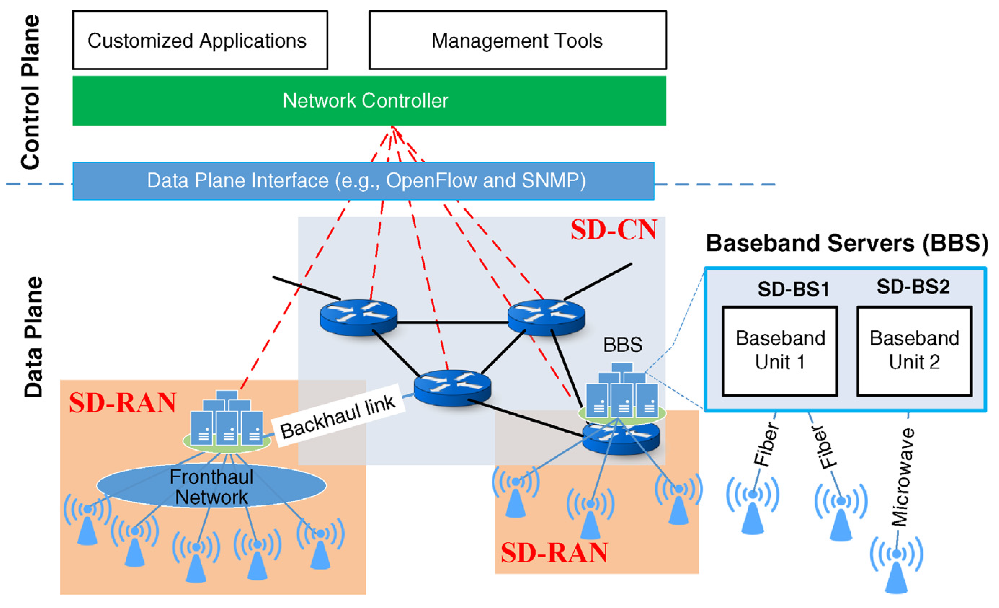
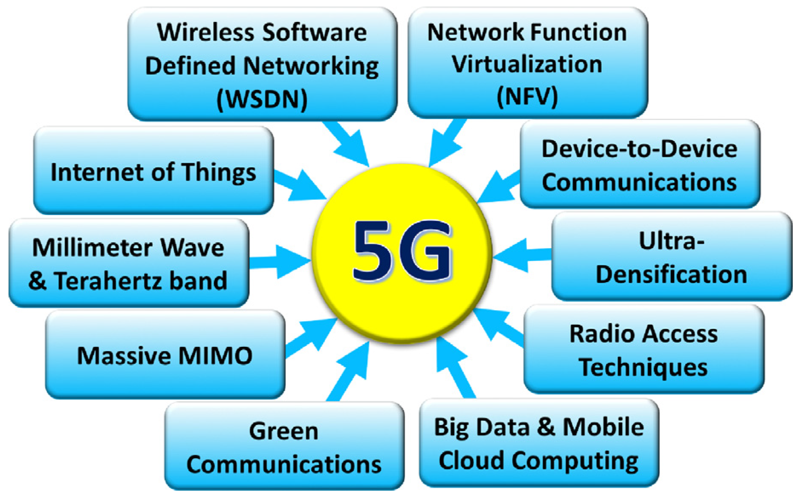
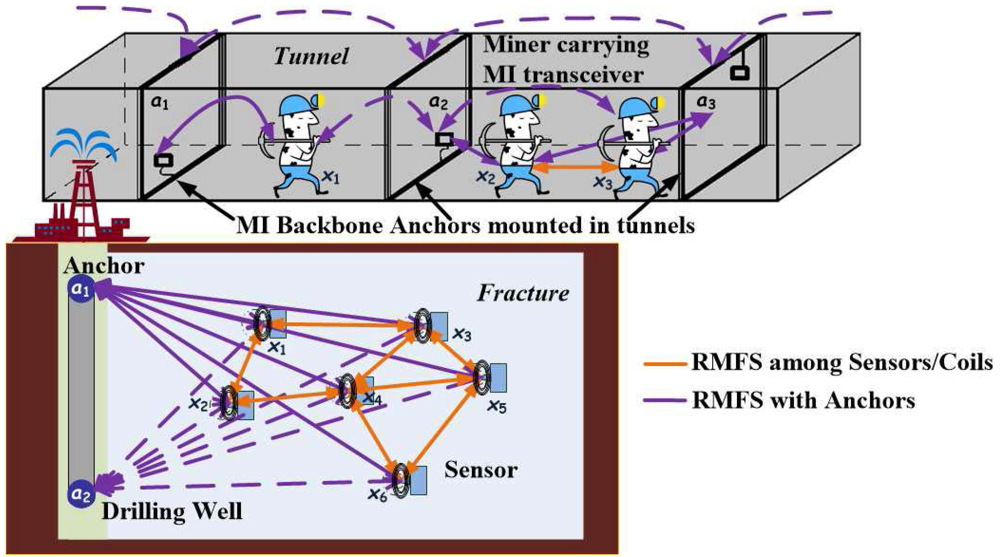
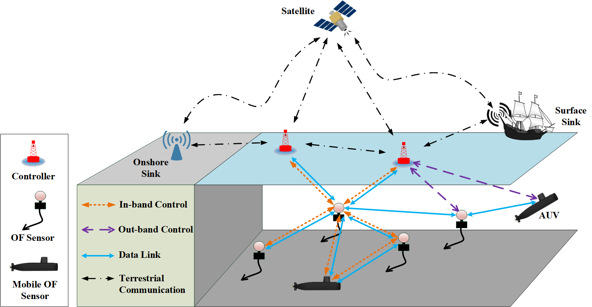

Research Projects
Wireless Software-Defined Networking

Overall system
architecture.
- S.-C. Lin, "End-to-End Network Slicing for 5G&B Wireless Software-Defined Systems," in Proc. of IEEE GLOBECOM, Abu Dhabi, UAE, December 2018. [News]
[News1]
[News2]
- I. F. Akyildiz, S.-C. Lin, and P. Wang, "Wireless Software-defined Networks (W-SDNs) and Network Function Virtualization (NFV) for 5G Cellular Systems: An Overview and Qualitative Evaluation," Computer Network (Elsevier) Journal, vol. 93, pp. 66-79, December 2015.
- I. F. Akyildiz, P. Wang, and S.-C. Lin, "SoftAir: A Software Defined Networking Architecture for 5G Wireless Systems,"
Computer Network (Elsevier) Journal, vol. 85, pp. 1-18, July 2015.
5G Internet-of-Things

Enabling technologies.
- L. Tello-Oquendo, S.-C. Lin, I. F. Akyildiz, and V. Pla,
"Software-Defined Architecture for QoS-Aware IoT Deployments in 5G Systems," to be submitted, 2018.
- I. F. Akyildiz, S. Nie, S.-C. Lin, and M. Chandrasekaran,
"5G Roadmap: 10 Key Enabling Technologies," Computer Network (Elsevier) Journal, vol. 106, pp. 17-48, September 2016.
- S.-C. Lin and K. C. Chen, "Statistical QoS Control of Network Coded Multipath Routing in Large Cognitive Machine-to-Machine Networks,"
IEEE Internet of Things Journal, vol. 3, no. 4, pp. 619-627, August 2016.
Wireless Underground Sensor Networks

Network deployment.
- I. F. Akyildiz, H. K. Schmidt, and S.-C. Lin, "Environment-Aware Cross-Layer Communication Protocol in Underground Oil Reservoirs,"
U.S. Patent No. 10,117,042B2, issued on October 30, 2018.
- H. K. Schmidt, I. F. Akyildiz, S.-C. Lin, and A. A. Alshehri, "Magnetic Induction Based Localization for Wireless Sensor Networks in Underground Oil Reservoirs,"
U.S. Patent No. 10,048,400B2, issued on August 14, 2018.
- S.-C. Lin, A. A. Alshehri, P. Wang, and I. F. Akyildiz, "Magnetic Induction-Based Localization in Randomly-Deployed Wireless Underground Sensor Networks," IEEE Internet of Things Journal, vol. 4, no. 5, pp. 1454-1465, October 2017.
- S.-C. Lin, I. F. Akyildiz, P. Wang, and Z. Sun, "Distributed Cross-Layer Protocol Design for Magnetic Induction Communication in Wireless Underground Sensor Networks," IEEE Transactions on Wireless Communications, vol. 14, no. 7, pp. 4006-4019, July 2015.
Next-generation Underwater Communication

Overall system architecture.
- I. F. Akyildiz, P. Wang, and S.-C. Lin, "SoftWater: Software-Defined Networking for Next-Generation Underwater Communication Systems," Ad Hoc Networks (Elsevier) Journal, vol. 46, pp. 1-11, August 2016.